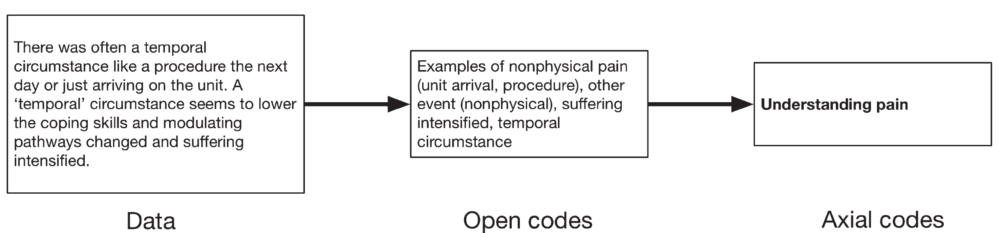
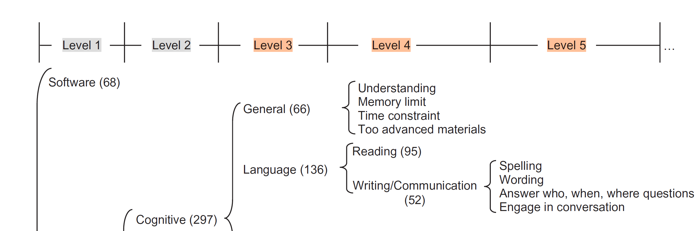

1. Executive Summary
2. Background & Motivation
High Dependency
Athletes rely heavily on coaches for verbal feedback, which limits the opportunity for personalized, spontaneous improvement.
Lack of Autonomy
Current training lacks real-time, non-visual performance data, making independent practice nearly impossible for VI players.
Design Opportunity
Translating spatial dynamics into haptic/audio feedback without violating silent-play regulations remains an open challenge.
3. Prior Work & Research Gaps
Training Fundamentals
Prior statistical studies by Link et al. [5] and Fujita et al. [6] established that ball trajectory and sector targeting are vital factors for competitive success.
Existing Limitations
- Virtual Barriers [1]: Systems like Goalbaural are often limited to VR/AR, lacking physical ball interaction.
- Regulation Conflict [2, 3]: Tools like L-Ball or mechanical ball launchers introduce noise violating silent-play norms.
Addressing Practical Needs
Revalidating prior metrics to build a physical-court-based framework that provides real-time feedback while remaining regulation-compliant.
4. Proposed Research Plan
Expanding Context to a Global Perspective
Foundation (South Korea) On-going Target: CHI '27
Building upon detailed requirements gathered from the South Korean goalball community. This stage provides deep insight into competitive dynamics and specific accessibility barriers encountered by professional athletes.
Global Connection (United States) Target: ASSETS '28
Connecting Korean findings with the US-based goalball ecosystem. By engaging with athletes at the US, the research will synthesize international training needs and establish a universal design framework that transcends regional borders.
Collaborative Design Synthesis
Target: CHI '28Autonomous Interaction Models
Integrating fabrication expertise to develop wearable or court-integrated sensors that provide independent, real-time auditory/haptic feedback.
Regulation-Compliant Framework
Formalizing a design space that balances rich multimodal performance data with the 'silent-play' requirements of international competition.
5. Methodology of the Current Phase
📕 Qualitative Research Approach [10]
Interviews and Focus Groups
We use semi-structured interviews and, where useful, focus groups to understand real training practices from the perspectives of key stakeholders. Participants will include athletes and coaches across amateur, elite, and national-team contexts, so the study can capture both everyday constraints and high-performance demands.
Open Coding to Thematic Analysis
After transcription, each coder begins with open coding to identify meaningful concepts from the data. The team then compares and refines codes into a shared framework, which supports thematic analysis for deriving grounded findings, design requirements, and next-step opportunities.
🔍 Examples
What is the coding?

Code structure

6. References
- Miura, Takahiro, et al. "Goalbaural: A training application for goalball-related aural sense." Proceedings of the 9th Augmented Human International Conference. 2018.
- Pratiwi, Febriana, et al. "L-Ball: Designing a novel sports electronic audio ball for visual impairment student." Annals of Applied Sport Science 8.4 (2020): 0-0.
- Brucker, Michael, et al. "Goalball Launcher." Design Engineering Technology Project Poster, Trine University.
- Polsorn, Kanlapruk, et al. "The Developments of Goalball Famous Visually Impaired Blind Athletes' Agility Using Smart Ladder Drill Prototype." International Journal of Health Sciences 6.S2 (2022): 184-202.
- Link, Daniel, and Christoph Weber. "Finding the gap: An empirical study of the most effective shots in elite goalball." PLOS ONE 13.4 (2018): e0196679.
- Fujita, Rafael, Otavio Furtado, and Marcio Morato. "Ball trajectories and probability of scoring a goal in elite male goalball throws." European Journal of Adapted Physical Activity 14.1 (2021).
- Lazar, Jonathan, Jinjuan Heidi Feng, and Harry Hochheiser. Research Methods in Human-Computer Interaction. Morgan Kaufmann, 2017.
- Kim, Gyeongdeok, Chungman Lim, and Gunhyuk Park. "I-Scratch: Independent Slide Creation With Auditory Comment and Haptic Interface for the Blind and Visually Impaired." Proceedings of the 2025 CHI Conference on Human Factors in Computing Systems. 2025.
- Kim, Gyeongdeok, et al. "I-VAMOS: Independent Voting with Accessible Multimodal Offline System for Visually Impaired Users." Proceedings of the 2026 CHI Conference on Human Factors in Computing Systems. 2026.
- Lazar, Jonathan, Jinjuan Heidi Feng, and Harry Hochheiser. "Research methods in human-computer interaction." Morgan Kaufmann. 2017.
- Li, Franklin Mingzhe, et al. "Non-visual cooking: exploring practices and challenges of meal preparation by people with visual impairments." Proceedings of the 23rd International ACM SIGACCESS Conference on Computers and Accessibility. 2021.
- Li, Franklin Mingzhe, et al. "A Recipe for Success? Exploring Strategies for Improving Non-Visual Access to Cooking Instructions." Proceedings of the 26th International ACM SIGACCESS Conference on Computers and Accessibility. 2024.
- Sharma, Tanusree, et al. "Disability-first design and creation of a dataset showing private visual information collected with people who are blind." Proceedings of the 2023 CHI Conference on Human Factors in Computing Systems. 2023.
- Zhang, Lotus, et al. "Exploring interactive sound design for auditory websites." Proceedings of the 2022 CHI Conference on Human Factors in Computing Systems. 2022.
- Li, Franklin Mingzhe, et al. "Understanding visual arts experiences of blind people." Proceedings of the 2023 CHI Conference on Human Factors in Computing Systems. 2023.
- Ran, Zihe, et al. "How users who are blind or low vision play mobile games: Perceptions, challenges, and strategies." Proceedings of the 2025 CHI Conference on Human Factors in Computing Systems. 2025.